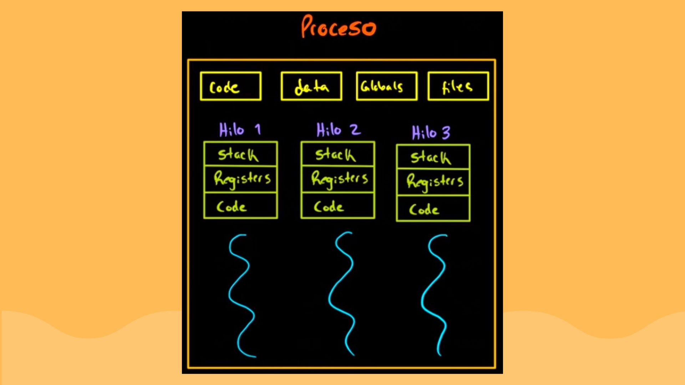
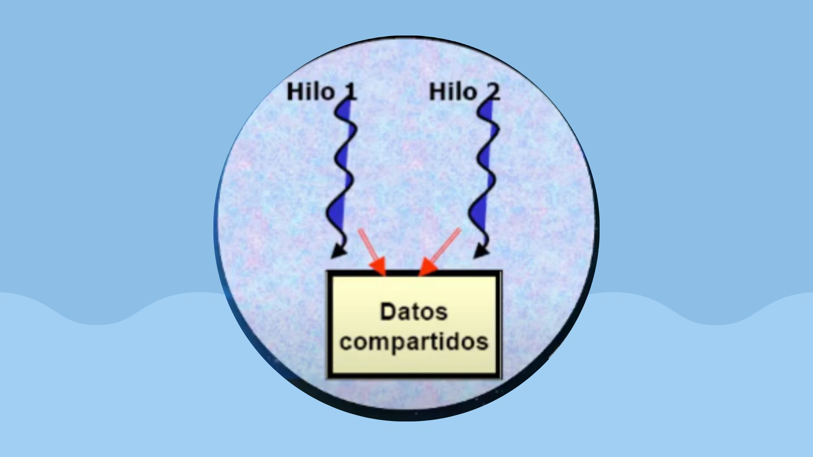
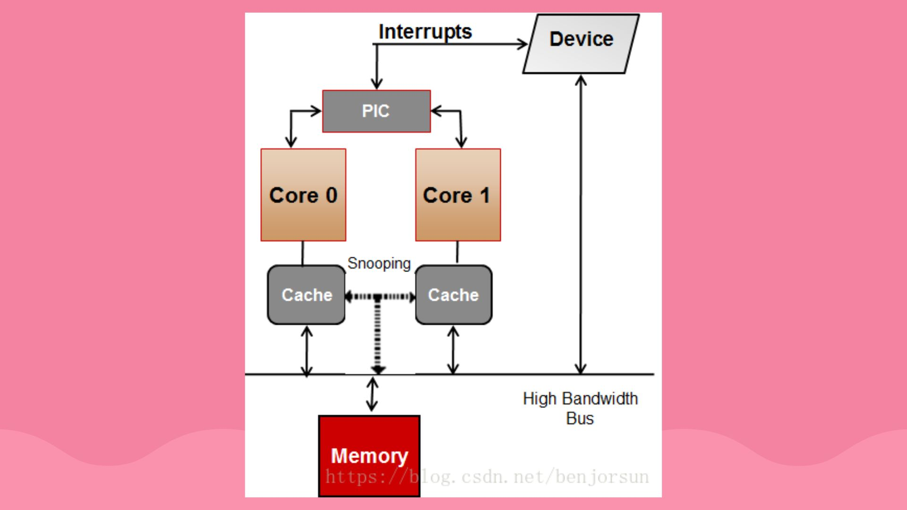

Hilos
Publicado: 10/07/2022
.jpg)
Que son? en informática, un hilo ("thread" en inglés) es algo que separa un programa en multiples tareas separadas. Esto le da al procesador un grado mayor de flexibilidad en la forma en que administra las tareas. Los hilos son las unidades de instrucciones de procesamiento más pequeño que el sistema opertaivo da al procesador. Usar múltiples hilos para correr un programa es más eficiente pues el programa en cuestión puede llevar a cabo múltiples tareas al mismo tiempo.
¿Cual es la diferencia entre
proceso e hilo? Los hilos se distingen de los tradicionales procesos en que los procesos son -generalmente- independientes, llevan bastante información de estados e interactúan solo a través de mecanismos de comunicación, muchos hilos generalmente comparten otros recursos de forma directa.
Multihilos
un programa multihilo contiene dos o más partes que pueden ejecutarse concurrentemente (aunque sóolo tengamos una CPU). Esto permite escribir programas muy eficientes que utilizan al máximo la CPU reduciendo al mínimo, el tiempo que esta sin usarse.
Funcionalidades de los hilos
Los hilos aumentan la eficiencia de la comunicación entre programas en ejecución. En la mayoría de los sistemas en la comunicación entre procesos debe intervenir el núcleo para ofrecer protección de los recursos y realizar la comunicación misma.
SMP
La arquitectura SMP (también llamada UMA, del inglés Uniform Memory Acces en español "acceso uniforme a memoria"). Se caracteriza por el hecho de que varias unidades de procesamiento comparten el acceso a la memoria, compitiendo en igualdad de condiciones por dicho acceso, de ahí la denominación "simétrico".